Source & review coverageمنبع و پوشش مرور
Source text, original figure/table pages and bibliography inspected. Original source-page views preserve the complete graphics when individual crops are uncertain. Printed values only; no curve digitization. Project relevance and baseline recommendations are explicitly reviewer assessments. Supplementary material not supplied with the local PDF is not claimed reviewed.متن،صفحات شکل/جدول وکتابنامه بررسی شدهاند.نمای صفحه اصلی تصویر کامل را درمرزبرش نامطمئن حفظ میکند.فقط عدد چاپشده ثبت و منحنی تخمین زده نشده است.نقش پروژه وخطمبنا ارزیابی مستقل مرورگر است.پیوست بیرونی موجودنبوده،مطالعهشده ادعا نمیشود.
Research problem and scopeمسئله ودامنه
Wang Cong, Wu Tao and Bao Jinsong, Journal of Manufacturing Systems 84 (2026), pp. 100–116. Cognitive agents and virtual–real co-evolution address static Twins, ambiguous fault reasoning and resource coordination in industrial energy maintenance. The authors state contributions rather than numbered hypotheses.Wang Congوهمکاران،۲۰۲۶.عامل شناختی وهمتکاملی مجازی/واقعی برایTwinایستا،ابهام تشخیص وهماهنگی منبع درنگهداری صنعتی پیشنهاد میشود.سهمهابیان شدهاند،نه فرضیه شمارهدار. Source · PDF p. 1Source · PDF p. 2Source · PDF p. 3
Methodology and implementationشناخت،حافظه وبرنامه نگهداری
A central agentic Twin orchestrates monitoring, diagnostic, decision and execution agents. Hybrid symbolic–neural representations combine thermodynamic and ontology knowledge with sensor dynamics. Memory distinguishes long-term, short-term and working contexts. Algorithms 1–2 describe memory-driven and goal/constraint-based task planning; execution outcomes feed back into memory.Twinمرکزی عامل پایش،تشخیص،تصمیم واجرا راهدایت میکند.نمایش نمادین–عصبی دانش حرارتی/هستیشناسی رابه دینامیک حسگر پیوند میدهد.حافظه بلندمدت،کوتاهمدت وکاری و الگوریتم۱–۲برنامهریزی مبتنی برحافظه/هدف/قیدرادارند؛نتیجه اجرا بازخورد میشود. Source · PDF p. 4Source · PDF p. 6Source · PDF p. 8Source · PDF p. 9Source · PDF p. 10Source · PDF p. 11
Algorithm 3 introduces Q-learning MARL for maintenance resource decisions. Boiler states discretize flue-gas temperature, steam pressure and water-flow indicators. Actions include no action, fuel–air adjustment, soot blowing and emergency shutdown. Reward balances efficiency, safety, downtime and cost. Illustrative model families in the equations should not all be treated as independently trained experimental components.الگوریتم۳ازQ-learningچندعامل استفاده میکند.حالت بویلر از دما/فشار/دبی گسسته وکنش بیعملی،تنظیم سوخت–هوا،دودهزدایی وتوقف اضطراری است.پاداش بازده/ایمنی/توقف/هزینه را متوازن میکند.هرخانواده مدل نمونه درمعادلات الزاماًجزءتجربی آموزشدادهشده مستقل نیست. Source · PDF p. 6Source · PDF p. 7Source · PDF p. 11Source · PDF p. 12Source · PDF p. 15
Experiments and comparisonsموردصنعتی ومقایسهها
The case is a gas–steam boiler in a CHP plant with five years of operation and 5.2 million historical records. An 18-month tracking study and 1,000 maintenance-cycle analyses compare rule-based expert systems, pure machine learning, static Twins and centralized or single-agent maintenance against cognitive collaboration. The paper does not provide a public benchmark split or an LLM configuration sufficient for exact reproduction.مورد بویلر گاز–بخار درنیروگاهCHP باپنجسال کار و۵٫۲میلیون رکورد است.مطالعه۱۸ماهه و۱۰۰۰چرخه نگهداری روش خبره،ML،Twinایستاومتمرکز/تکعامل را باهمکاری شناختی مقایسه میکند.تقسیم داده عمومی وپیکربندیLLMکافی برای بازتولید دقیق ارائه نشده است. Source · PDF p. 12Source · PDF p. 13Source · PDF p. 14Source · PDF p. 15Source · PDF p. 16
Reported resultsنتایج ومخرجها
The paper reports diagnostic accuracy of 97.3%, model updating reduced from 48 to 2.3 hours, fault-warning lead time extended from 24 to 72 hours and maintenance cost efficiency improved by 31.2%. Table 5 reports overall collaborative performance increasing from 82.2% to 95.5%. These are industrial case results, rather than a residential energy-control benchmark.تشخیص۹۷٫۳٪،بهروزرسانی دانش۴۸به۲٫۳ساعت،هشدار۲۴به۷۲ساعت،بازده هزینه+۳۱٫۲٪وهمکاری۸۲٫۲به۹۵٫۵٪گزارش شده است.جدول۵تشخیص۹۶٫۸درمقابل۷۸٫۵٪دارد؛متن بهبود۱۸٫۳٪وجدول۲۳٫۳٪میگوید.اختلاف بایدحفظ شود. Source · PDF p. 1Source · PDF p. 14Source · PDF p. 15Source · PDF p. 16
Across 18 months, diagnostic accuracy increases from 89.2% to 97.3%; knowledge entities grow from 8,427 to 15,863 and relations from 12,546 to 28,991; the calibration cycle falls from 30 to 5.8 days. The text describes 96.8% versus 78.5% collaborative diagnosis as an 18.3% improvement, whereas the table reports +23.3%; retain the reported distinction between percentage points and relative change.دقت بلندمدت۸۹٫۲به۹۷٫۳٪،موجودیت۸۴۲۷به۱۵۸۶۳،رابطه۱۲۵۴۶به۲۸۹۹۱وکالیبراسیون۳۰به۵٫۸روز گزارش شده است.این نتیجه صنعتی مقاله است وکارایی موردانتظارHEMSنیست. Source · PDF p. 16
Author-stated limitationsقوت،محدودیت وآینده نویسندگان
The authors identify data quality, Twin fidelity, scalability and interpretability as limitations. Public raw data, executable component configurations and a sufficiently detailed split protocol are absent from the local article. This constrains reproduction and comparison with other domains.نویسندگان حافظه/دانش تطبیقی وهماهنگی حلقهبسته رابرترمیدانند،اماوابستگی به کیفیت چندوجهی،دقتTwin،مقیاسپذیری وفرمانپذیری تفسیر درابهام را محدودیت میدانند.همجوشی،انتقال،توضیح علّی ودانش میاندامنه آیندهاند. Source · PDF p. 16
Key reported resultsنتایج کلیدی گزارششده
Reported accuracy 97.3%; update 48 to 2.3 hours; warning lead time 24 to 72 hours; maintenance cost efficiency +31.2%.تشخیص۹۷٫۳٪،بهروزرسانی۲٫۳ساعت ودقت۱۸ماهه۸۹٫۲به۹۷٫۳٪. Source · PDF p. 14Source · PDF p. 16
Figures, captions & extracted evidenceشکلها، عنوانها و شواهد استخراجشده
Figure 1
Comparison & resultsمقایسه و نتایج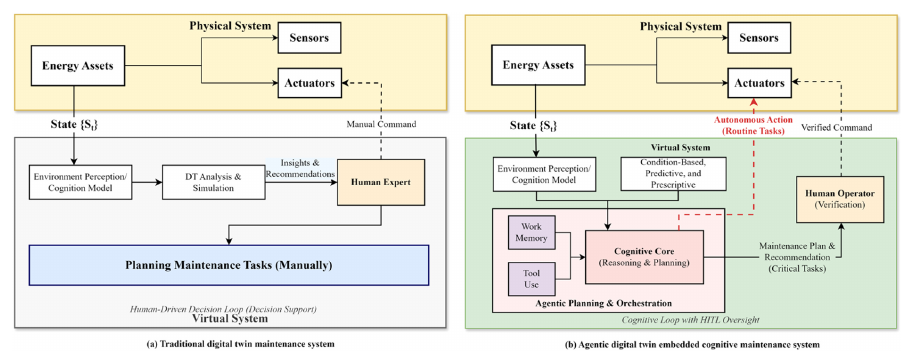
How to read this figureراهنمای خواندن شکل
Check the axes, units, panel labels and the caption’s definition of better performance. Compare methods under the stated conditions; keep uncertainty, tradeoffs and normalization separate from headline gains.محور، واحد، پنل و تعریف عملکرد بهتر در عنوان را بررسی کنید. روشها را در شرایط بیانشده مقایسه و عدمقطعیت، مصالحه و نرمالسازی را از بهبود شاخص اصلی جدا نگه دارید.
Reader guidance · not an additional author claimراهنمای مطالعه · ادعای اضافی نویسنده نیستWhat this figure showsاین شکل چه نشان میدهد؟
Contrasts manual interpretation with autonomous reasoning and virtual–real feedback. It is a conceptual architecture, not an experimental performance graph.مقایسه نگهداری سنتی و شناختی؛ نمودار مفهومی است، نه نتیجه عددی.
Reported values & evidence limitsمقادیر گزارششده و حدود شواهد
The explanation above summarizes the visual. Inspect the original labels for its full details; no additional values have been inferred.توضیح بالا تصویر را خلاصه میکند. جزئیات کامل در برچسب اصلی است و مقدار اضافی استنباط نشده است.
Figure 2
Mechanism & workflowسازوکار و گردش کار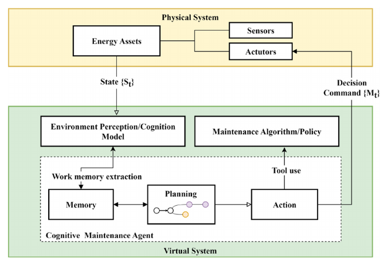
How to read this figureراهنمای خواندن شکل
Trace the inputs, processing stages and outputs, then look for feedback or validation paths. Use the accompanying explanation to distinguish the proposed design from components actually tested in the paper.ورودی، مرحله پردازش و خروجی را دنبال و مسیر بازخورد یا اعتبارسنجی را پیدا کنید. با توضیح همراه، طراحی پیشنهادی را از مؤلفه واقعاً آزمودهشده جدا کنید.
Reader guidance · not an additional author claimراهنمای مطالعه · ادعای اضافی نویسنده نیستWhat this figure showsاین شکل چه نشان میدهد؟
Monitoring, diagnosis, decision and execution interact through data, knowledge and virtual–real evolution. The diagram specifies component relationships; it reports no separate numerical result.معماری پایش، تشخیص، تصمیم و اجرا و جریان دانش و داده را نشان میدهد.
Reported values & evidence limitsمقادیر گزارششده و حدود شواهد
The explanation above summarizes the visual. Inspect the original labels for its full details; no additional values have been inferred.توضیح بالا تصویر را خلاصه میکند. جزئیات کامل در برچسب اصلی است و مقدار اضافی استنباط نشده است.
Figure 3
Comparison & resultsمقایسه و نتایج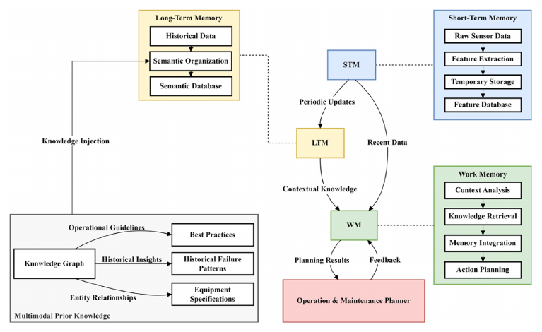
How to read this figureراهنمای خواندن شکل
Check the axes, units, panel labels and the caption’s definition of better performance. Compare methods under the stated conditions; keep uncertainty, tradeoffs and normalization separate from headline gains.محور، واحد، پنل و تعریف عملکرد بهتر در عنوان را بررسی کنید. روشها را در شرایط بیانشده مقایسه و عدمقطعیت، مصالحه و نرمالسازی را از بهبود شاخص اصلی جدا نگه دارید.
Reader guidance · not an additional author claimراهنمای مطالعه · ادعای اضافی نویسنده نیستWhat this figure showsاین شکل چه نشان میدهد؟
Long-term, short-term and working memory separate persistent knowledge from current context. Memory organization is methodological evidence, not an accuracy measurement.حافظه بلندمدت، کوتاهمدت و کاری از یکدیگر تفکیک شدهاند.
Reported values & evidence limitsمقادیر گزارششده و حدود شواهد
The explanation above summarizes the visual. Inspect the original labels for its full details; no additional values have been inferred.توضیح بالا تصویر را خلاصه میکند. جزئیات کامل در برچسب اصلی است و مقدار اضافی استنباط نشده است.
Figure 4
Comparison & resultsمقایسه و نتایج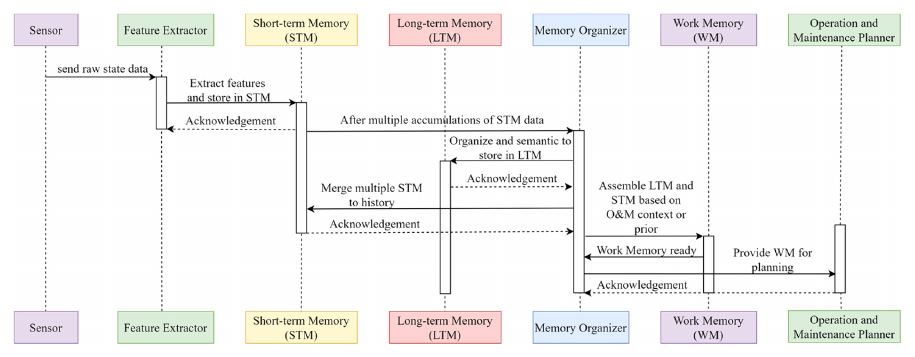
How to read this figureراهنمای خواندن شکل
Check the axes, units, panel labels and the caption’s definition of better performance. Compare methods under the stated conditions; keep uncertainty, tradeoffs and normalization separate from headline gains.محور، واحد، پنل و تعریف عملکرد بهتر در عنوان را بررسی کنید. روشها را در شرایط بیانشده مقایسه و عدمقطعیت، مصالحه و نرمالسازی را از بهبود شاخص اصلی جدا نگه دارید.
Reader guidance · not an additional author claimراهنمای مطالعه · ادعای اضافی نویسنده نیستWhat this figure showsاین شکل چه نشان میدهد؟
Retrieval and update paths connect historical maintenance experience to current reasoning. No numerical ablation of these individual arrows is printed in the figure.بازیابی و بهروزرسانی، تجربه تاریخی را به استدلال جاری پیوند میدهد.
Reported values & evidence limitsمقادیر گزارششده و حدود شواهد
The explanation above summarizes the visual. Inspect the original labels for its full details; no additional values have been inferred.توضیح بالا تصویر را خلاصه میکند. جزئیات کامل در برچسب اصلی است و مقدار اضافی استنباط نشده است.
Figure 5
Mechanism & workflowسازوکار و گردش کار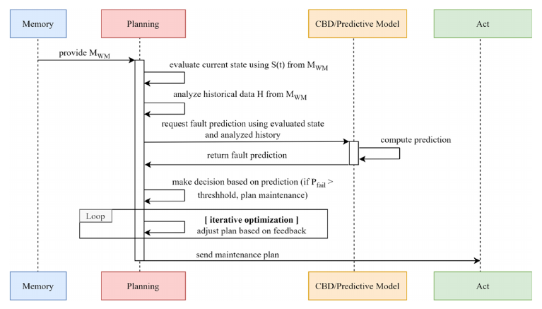
How to read this figureراهنمای خواندن شکل
Trace the inputs, processing stages and outputs, then look for feedback or validation paths. Use the accompanying explanation to distinguish the proposed design from components actually tested in the paper.ورودی، مرحله پردازش و خروجی را دنبال و مسیر بازخورد یا اعتبارسنجی را پیدا کنید. با توضیح همراه، طراحی پیشنهادی را از مؤلفه واقعاً آزمودهشده جدا کنید.
Reader guidance · not an additional author claimراهنمای مطالعه · ادعای اضافی نویسنده نیستWhat this figure showsاین شکل چه نشان میدهد؟
The planning workflow connects goals, constraints, agent tasks and execution feedback. Read with Algorithms 1–2 rather than treating the schematic as a controller benchmark.هدف، قید، وظیفه عامل و بازخورد اجرا در گردش برنامهریزی پیوند میخورند.
Reported values & evidence limitsمقادیر گزارششده و حدود شواهد
The explanation above summarizes the visual. Inspect the original labels for its full details; no additional values have been inferred.توضیح بالا تصویر را خلاصه میکند. جزئیات کامل در برچسب اصلی است و مقدار اضافی استنباط نشده است.
Figure 6
Mechanism & workflowسازوکار و گردش کار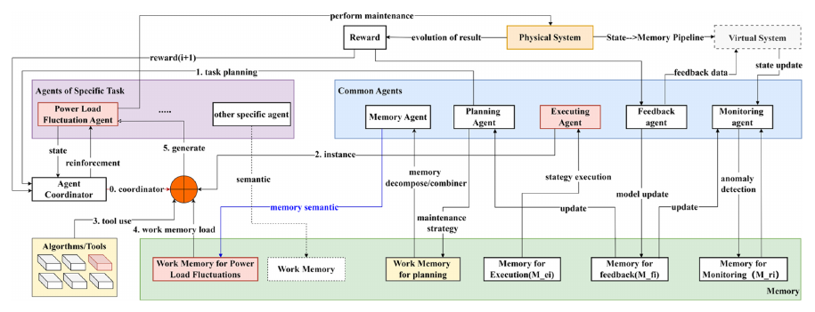
How to read this figureراهنمای خواندن شکل
Trace the inputs, processing stages and outputs, then look for feedback or validation paths. Use the accompanying explanation to distinguish the proposed design from components actually tested in the paper.ورودی، مرحله پردازش و خروجی را دنبال و مسیر بازخورد یا اعتبارسنجی را پیدا کنید. با توضیح همراه، طراحی پیشنهادی را از مؤلفه واقعاً آزمودهشده جدا کنید.
Reader guidance · not an additional author claimراهنمای مطالعه · ادعای اضافی نویسنده نیستWhat this figure showsاین شکل چه نشان میدهد؟
Observed outcomes support knowledge and model updates. The diagram explains the adaptation loop; longitudinal numerical results are in Table 6.نتیجه مشاهدهشده باعث بهروزرسانی دانش و مدل میشود؛ اعداد طولی در جدول۶ است.
Reported values & evidence limitsمقادیر گزارششده و حدود شواهد
The explanation above summarizes the visual. Inspect the original labels for its full details; no additional values have been inferred.توضیح بالا تصویر را خلاصه میکند. جزئیات کامل در برچسب اصلی است و مقدار اضافی استنباط نشده است.
Figure 7
Interface / study settingرابط یا بستر مطالعه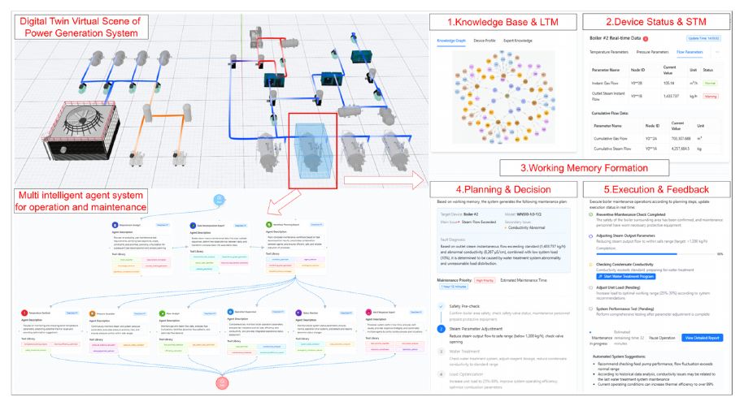
How to read this figureراهنمای خواندن شکل
Identify the inputs, outputs or physical setting visible in the original. Use the caption to distinguish an illustrative screen or setup from a measured experimental result.ورودی، خروجی یا بستر فیزیکی نمایشدادهشده را مشخص کنید. با عنوان شکل، تصویر نمونه رابط یا تجهیزات را از نتیجه آزمایش اندازهگیریشده جدا کنید.
Reader guidance · not an additional author claimراهنمای مطالعه · ادعای اضافی نویسنده نیستWhat this figure showsاین شکل چه نشان میدهد؟
The application view shows virtual equipment and operational maintenance interfaces. It documents system integration, without an independent usability experiment.نمای سامانه، تجهیزات مجازی و رابط نگهداری را نمایش میدهد.
Reported values & evidence limitsمقادیر گزارششده و حدود شواهد
The explanation above summarizes the visual. Inspect the original labels for its full details; no additional values have been inferred.توضیح بالا تصویر را خلاصه میکند. جزئیات کامل در برچسب اصلی است و مقدار اضافی استنباط نشده است.
Figure 8
Comparison & resultsمقایسه و نتایج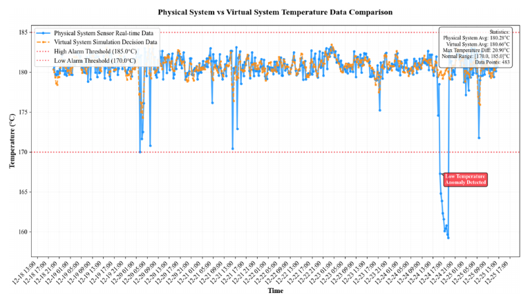
How to read this figureراهنمای خواندن شکل
Check the axes, units, panel labels and the caption’s definition of better performance. Compare methods under the stated conditions; keep uncertainty, tradeoffs and normalization separate from headline gains.محور، واحد، پنل و تعریف عملکرد بهتر در عنوان را بررسی کنید. روشها را در شرایط بیانشده مقایسه و عدمقطعیت، مصالحه و نرمالسازی را از بهبود شاخص اصلی جدا نگه دارید.
Reader guidance · not an additional author claimراهنمای مطالعه · ادعای اضافی نویسنده نیستWhat this figure showsاین شکل چه نشان میدهد؟
Measured and simulated boiler signals are compared to illustrate synchronization. No values have been estimated from the plotted curves; retain axes and units in the source page.سیگنال واقعی و شبیهسازی برای همگامی مقایسه شده؛ مقدار منحنی تخمین زده نشده است.
Reported values & evidence limitsمقادیر گزارششده و حدود شواهد
The explanation above summarizes the visual. Inspect the original labels for its full details; no additional values have been inferred.توضیح بالا تصویر را خلاصه میکند. جزئیات کامل در برچسب اصلی است و مقدار اضافی استنباط نشده است.
Tables & numerical evidenceجدولها و شواهد عددی
Table 1 · Prior Twin maintenance studiesمرور کارهای پیشین بر پایه نوع داده، حوزه و وظیفه است.
Classifies prior work by data type, field and task; this is literature context, not a new baseline run.مرور کارهای پیشین بر پایه نوع داده، حوزه و وظیفه است.
Table 1 · PDF p. 3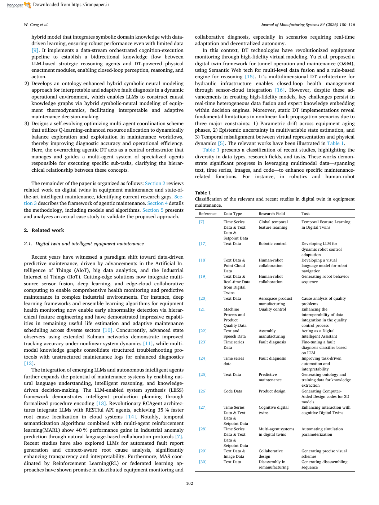
Table 2 · System formalization variablesمتغیرهای حالت، کنش، دانش و عامل در چارچوب تعریف میشوند.
Defines state, action, knowledge and agent variables used in the formal framework.متغیرهای حالت، کنش، دانش و عامل در چارچوب تعریف میشوند.
Table 2 · PDF p. 7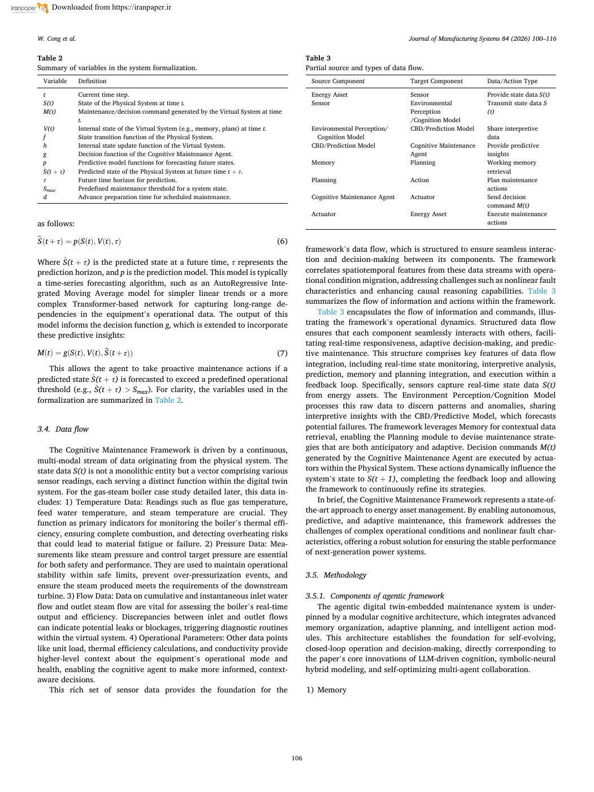
Table 3 · Sources and types of data flowمبدأ، مقصد و نوع داده یا فرمان مبادلهشده را فهرست میکند.
Lists source/target components and exchanged data or commands.مبدأ، مقصد و نوع داده یا فرمان مبادلهشده را فهرست میکند.
Table 3 · PDF p. 7Table 4 · Maintenance approach comparisonدقت۹۷٫۳٪، بهروزرسانی۲٫۳ساعت و هشدار۷۲ساعت برای روش پیشنهادی گزارش شده است.
Reports diagnostic accuracy 97.3%, model update 2.3 hours and warning lead time 72 hours for the proposed framework; preserve comparator definitions in the original table.دقت۹۷٫۳٪، بهروزرسانی۲٫۳ساعت و هشدار۷۲ساعت برای روش پیشنهادی گزارش شده است.
Table 4 · PDF p. 15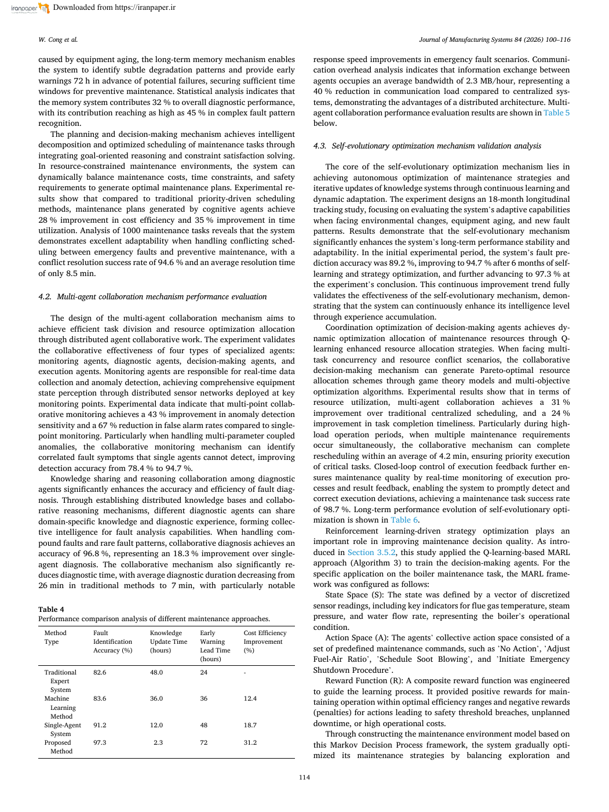
Table 5 · Multi-agent collaboration performanceعملکرد کلی از۸۲٫۲٪ به۹۵٫۵٪ میرسد؛ تفاوت درصد نسبی و واحددرصد در متن حفظ شده است.
Overall performance rises from 82.2% to 95.5%; the text/table distinction for 96.8% versus 78.5% diagnosis is preserved in results.عملکرد کلی از۸۲٫۲٪ به۹۵٫۵٪ میرسد؛ تفاوت درصد نسبی و واحددرصد در متن حفظ شده است.
Table 5 · PDF p. 16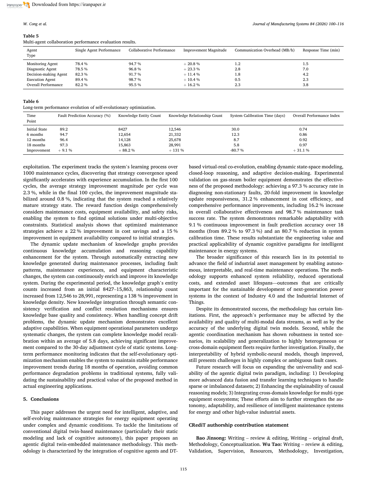
Table 6 · Long-term self-evolutionدر۱۸ماه دقت۸۹٫۲ به۹۷٫۳٪ و چرخه کالیبراسیون۳۰ به۵٫۸روز تغییر میکند.
Across 18 months accuracy rises 89.2% to 97.3%; entities 8,427 to 15,863; relations 12,546 to 28,991; calibration cycle 30 to 5.8 days.در۱۸ماه دقت۸۹٫۲ به۹۷٫۳٪ و چرخه کالیبراسیون۳۰ به۵٫۸روز تغییر میکند.
Table 6 · PDF p. 16Critical analysis — reviewer assessmentتحلیل انتقادی — ارزیابی مرورگر
The longitudinal industrial case is valuable evidence of integration, but incomplete public configuration and task differences prevent treating its scores as residential causal-diagnosis performance.مقایسه کمی سودهای بزرگ به مخرج،مقایسهگر وتقسیم بازتولیدپذیرنیاز دارد.اختلاف متن/جدول دلیلحفظعدداصلی ومحدودیت است. Source · PDF p. 15Source · PDF p. 16
Role in our researchنقش مقاله در پژوهش ما
Why is it important to our research?چرا برای پژوهش ما مهم است؟
Agentic diagnostic maintenance and adaptive Twins already have an industrial precedent. This paper matters for our novelty boundaries and for engineering memory across diagnostic episodes.همپوشانی مستقیم نوآوری عاملTwin،تشخیص،حافظه،برنامه ونگهداری تطبیقی است. Source · PDF p. 2Source · PDF p. 3
What does it contribute to our research?چه سهمی در پژوهش ما دارد؟
It contributes a separation of monitoring, diagnosis, planning and execution; memory structures; and an industrial longitudinal evaluation of adaptive maintenance.تفکیک حافظه–برنامه–اجراومعیار بازخورد صنعتی فراهم میکند. Source · PDF p. 8Source · PDF p. 11Source · PDF p. 15
How can we employ it?چگونه از آن استفاده کنیم؟
Adapt the memory and task interfaces in our Operational Twin. Record evidence, interventions and outcomes with versioned parameters; keep the Reference Twin frozen for comparison. This employment is a project design recommendation, not a result tested by the article.قراردادحافظه/وظیفه وبازخورد اجرا برایالهام معماری استفاده و فقطمفاهیم موجه بهعملیاتHEMSباایمنی مستقل ترجمه شوند. Source · PDF p. 9Source · PDF p. 11
Should we implement it as a baseline?آیا باید آن را بهعنوان خطمبنا پیاده کنیم؟
Use as an architectural helper and novelty-collision reference. A memory-disabled ablation is a candidate; reproducing the entire industrial MARL maintenance system is not a mandatory residential baseline.منبعکمکی/همپوشانی است،نه خطمبنای اجباری کامل.کنش بویلر وداده صنعتی وتخصیصQ-learningباوظیفه مسکونی متفاوتاند؛حذف حافظه/برنامه مشروط قابل اقتباس است. Source · PDF p. 12Source · PDF p. 15
Original source pagesصفحات اصلی منبع
PDF page 1
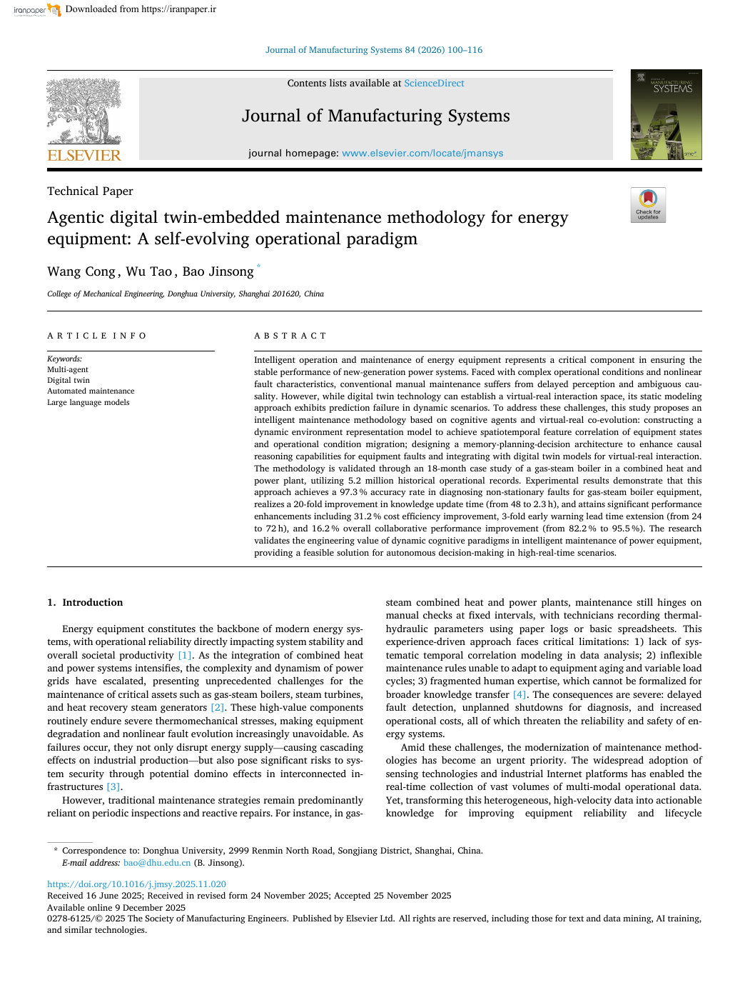
PDF page 2
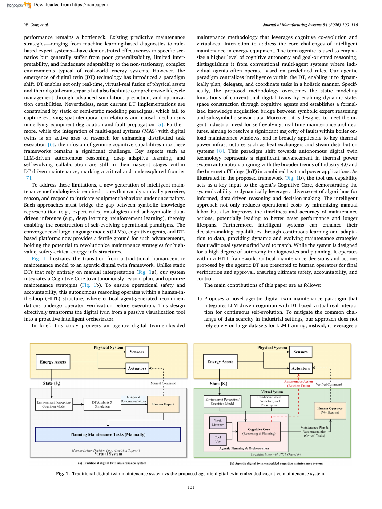
PDF page 4
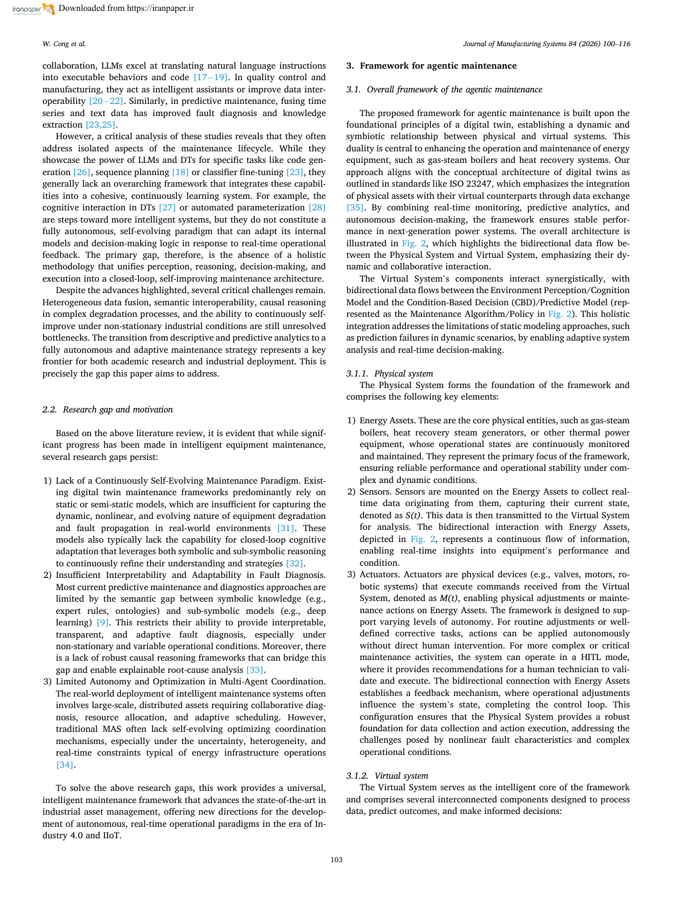
PDF page 5
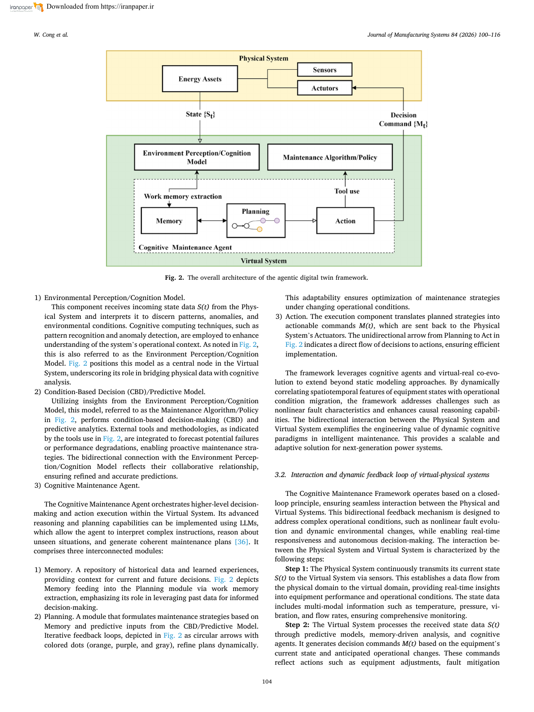
PDF page 6
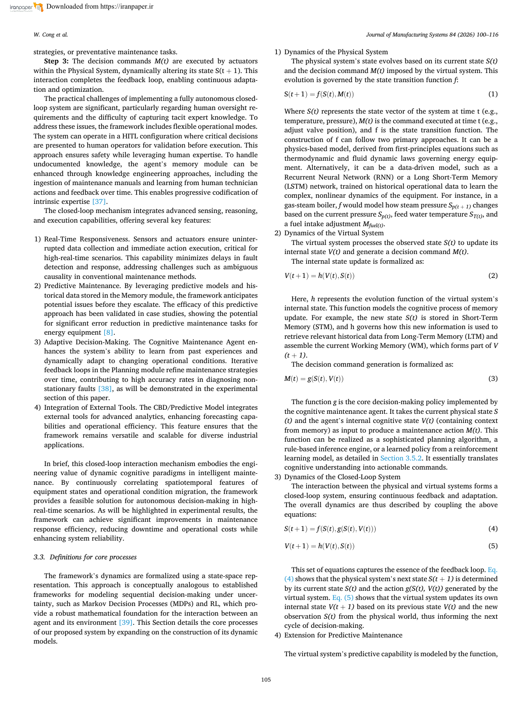
PDF page 8
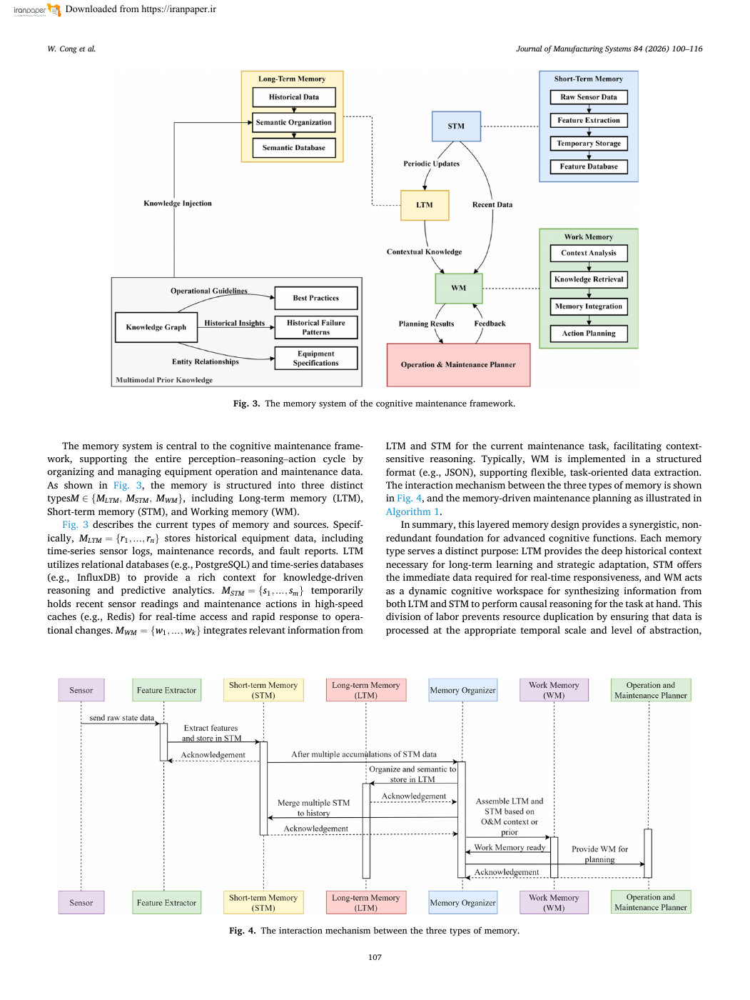
PDF page 9
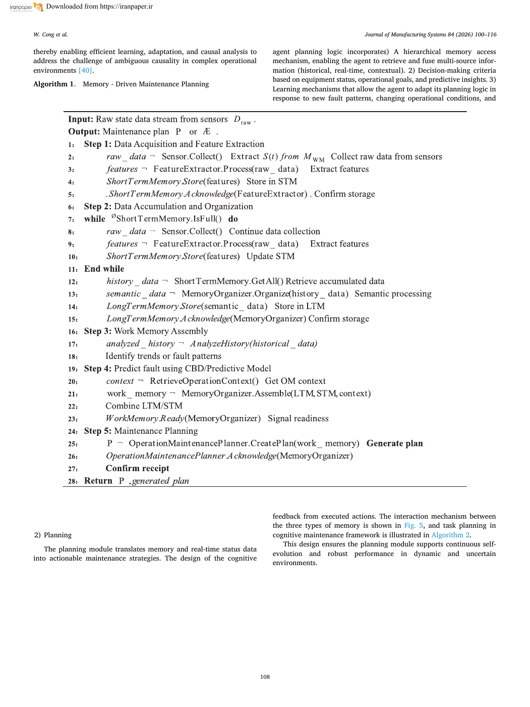
PDF page 10
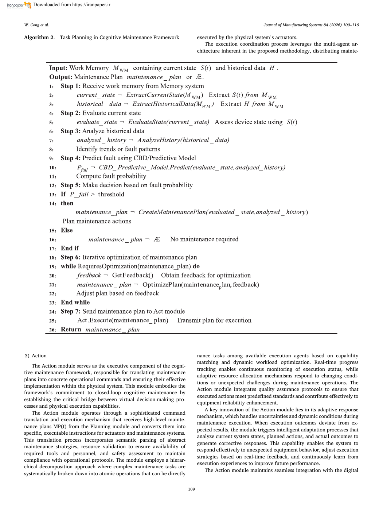
PDF page 11
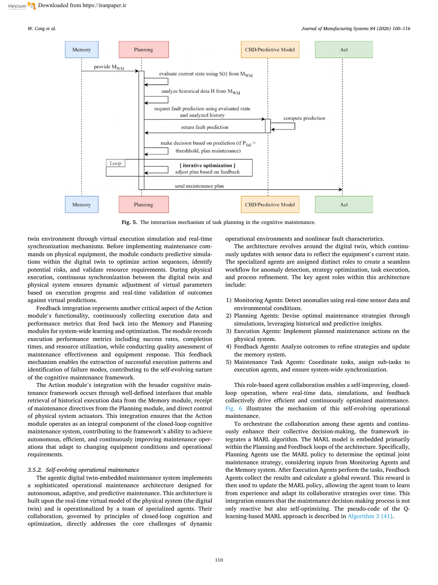
PDF page 12
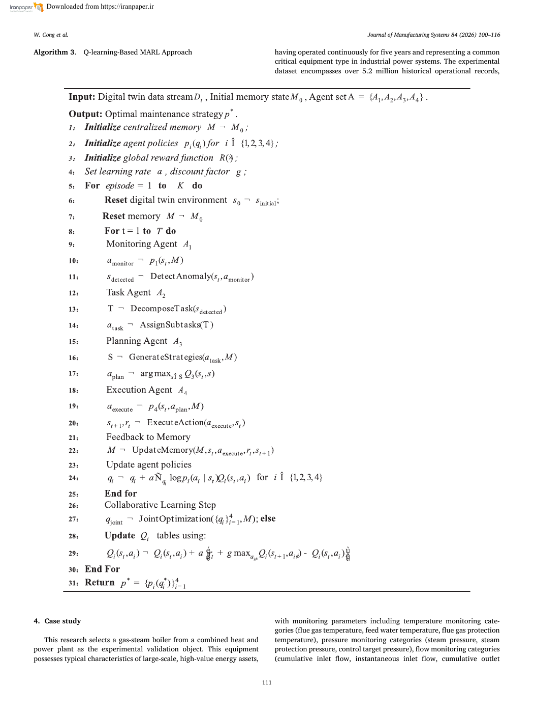
PDF page 13
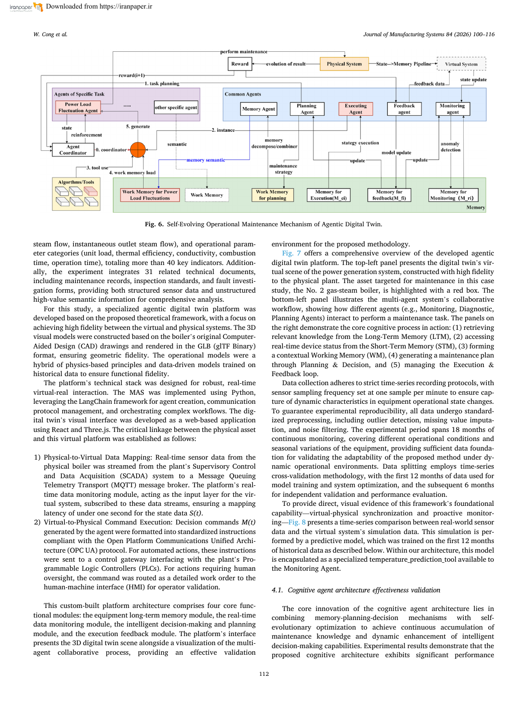
PDF page 14
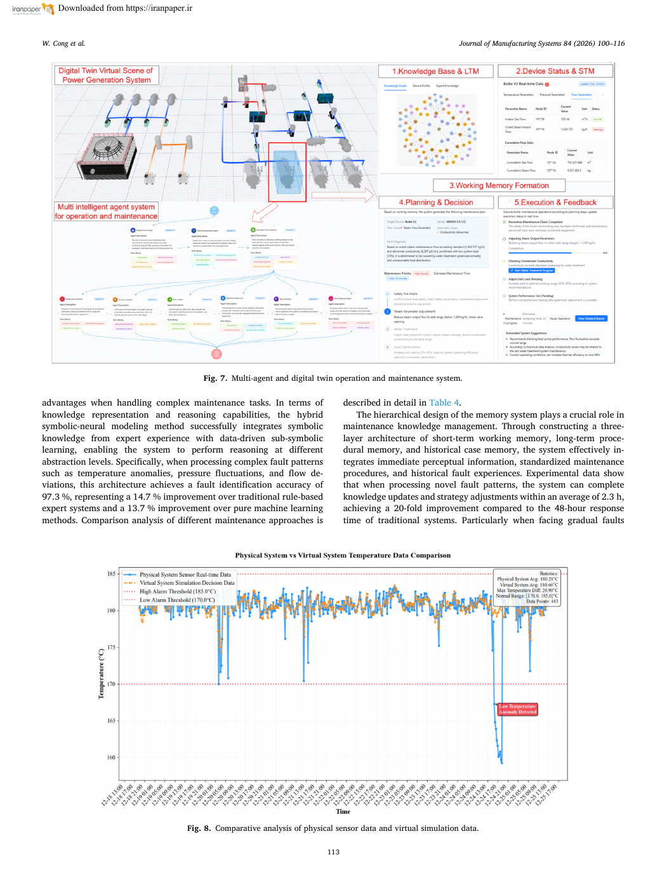
PDF page 17
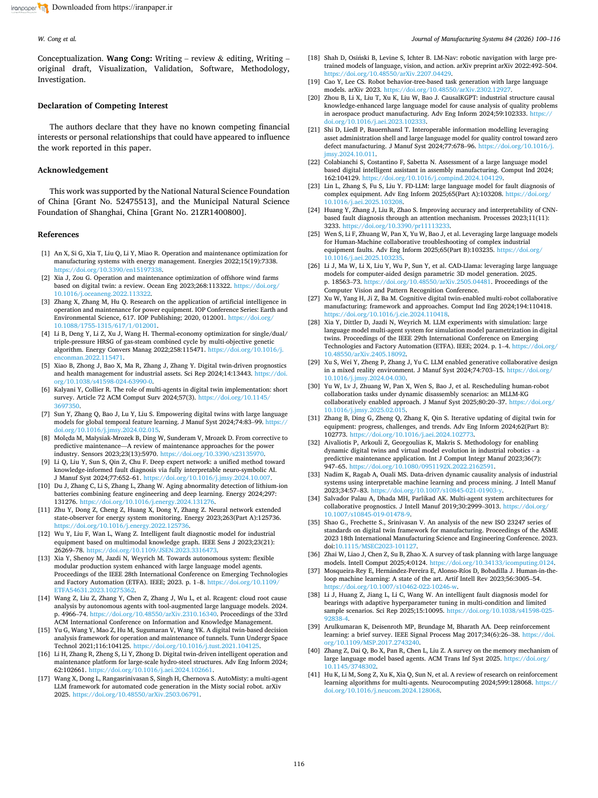
Full bibliographyکتابنامه کامل
Full bibliography transcribed from the source PDF. Original reference pages are the authority for formatting and extraction ambiguities; cited works were not independently analyzed just because they appear here.کتابنامه کامل از PDF منبع استخراج شده است. صفحه اصلی مرجع نگارش و ابهام استخراج است؛ درج منبع به معنی تحلیل مستقل آن اثر نیست.